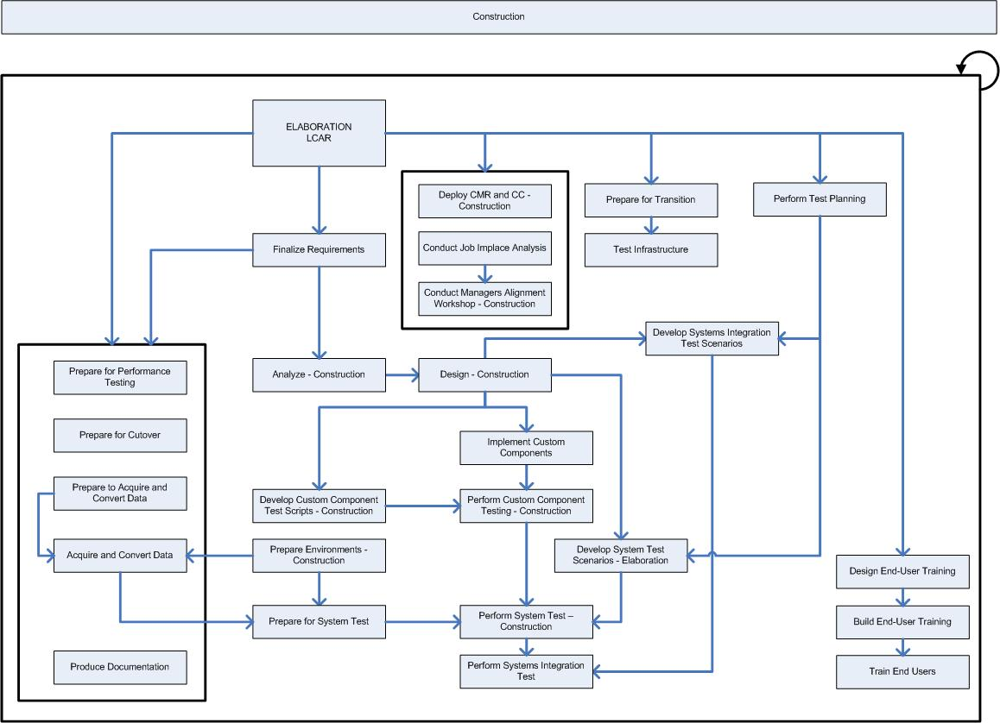

OUM |
Phase Overview |
||
Method Navigation |
Current Page Navigation |
||
|
|
||||||||
The goal of the Construction phase is to take the solution from detailed requirements models, through configuration of standard packaged software functionality, development and testing of custom components, and integration to a system that is ready for a first release that goes into production, often a limited release and often called a beta release. In short, we complete the development of the application system, validate that all components fit together, and prepare the system for the Acceptance Test and deployment.
For projects that involve the upgrading of an existing Production Environment, the Construction phase serves to update all components of the system and thoroughly test the migrated business solution.
In more detail, the Construction phase clarifies the remaining requirements and completes the development of the system based upon the baseline architecture. In one sense, and particularly for the custom developed components of the overall business solution, the Construction phase is a manufacturing process, where emphasis is placed on managing resources and controlling operations to optimize costs, schedules, and quality. At this point, the management mind-set changes from the development of intellectual property during Inception and Elaboration, to the development of deployable products during Construction and Transition. The application system is completed within a pre-defined number of iterations. Updates are made to each of the models (Use Case Model, Design Model, Architectural Implementation, etc.), as the requirements are progressively refined. For each iteration, every developer works with a given set of prioritized use cases and based on this develop and unit-test the components following the order of the priorities. When the development timebox has reached its end, the developer walks through the changes with the users. The users validate and refine the requirements, and provide MoSCoW priorities for each changed or new requirement. The modified or new requirements are fed back to the requirement models in the business layer. All changed or new requirements are evaluated to make certain there has not been a scope change, and the result provides the input for the next iteration of the partition. Once the team is comfortable with the approach, the formal and sequential nature of development followed by walk through, followed by evaluation can be replaced with a more informal and continuous approach. When all of the planned iterations have been completed for each partition, the complete application system is tested. The tested system is the end goal of the phase.
For Commercial Off-the-Shelf (COTS) software components of the overall business solution, the Construction phase involves the establishment of a System Test Environment based on the results of business requirements mapping and configuration activities from the Elaboration phase, and the execution of one or more system tests, depending on the number of Construction phase iterations that are planned. Where multiple iterations are planned, each system test will test the operation and integration of all business system flows within the (COTS) application system, as well as the application extensions completed and integrated with the COTS application system during that iteration.
An iterative process is used to refine the data and detail the use cases, as well as develop the physical database and components, until they meet the business requirements, within the constraints of the project timeboxes and priorities. The ambassador users provide refinements during each iteration, so that this can be used as input for the next iteration.
The outcome of the Elaboration phase is the architectural baseline and a version of all models. In particular, the Use Case Model and Analysis Model, as they are the most complete, provide the input for the first iteration within the Construction phase. Every designer and developer works with a part of the Use Case Model and Design Model. Functionality is developed and unit-tested following the order of the priorities of the use cases. When the iteration has reached its end, both technical participants and users review the results.
When all of the planned iterations have been completed, the complete system is tested. The tested system is the end work product of the phase.
The Construction phase finishes with the Initial Operational Capability Milestone. Review and be familiar with the objectives of this milestone before you begin this phase and make sure you have met these objectives before you move to the Transition phase.
 This phase overview is written from the perspective of a Full Method View, utilizing ALL of the processes, activities and tasks in this phase. Therefore, all of the following sections provide comprehensive information. If your project is utilizing a tailored approach (for example, Technology Full Lifecycle View, Application Implementation View, Middleware Architecture View), not everything in this overview may be appropriate for your project. Please keep this in mind, especially when reviewing the Prerequisites, Processes, Key Work Products, Tasks and Work Products and Task Dependencies sections. You should use OUM as a guideline for performing all types of information technology projects, but keep in mind that every project is different and that you need to adjust project activities according to each situation. Do not hesitate to add, remove, or rearrange tasks, but be sure to reflect these changes in your estimates and risk management planning. You should also consider the depth to which you address and complete each task based on the characteristics of your particular project or project increment. See Oracle's Full Lifecycle Method for Deploying Oracle-Based Business Solutions for further information on the scalability and adaptability of OUM.
This phase overview is written from the perspective of a Full Method View, utilizing ALL of the processes, activities and tasks in this phase. Therefore, all of the following sections provide comprehensive information. If your project is utilizing a tailored approach (for example, Technology Full Lifecycle View, Application Implementation View, Middleware Architecture View), not everything in this overview may be appropriate for your project. Please keep this in mind, especially when reviewing the Prerequisites, Processes, Key Work Products, Tasks and Work Products and Task Dependencies sections. You should use OUM as a guideline for performing all types of information technology projects, but keep in mind that every project is different and that you need to adjust project activities according to each situation. Do not hesitate to add, remove, or rearrange tasks, but be sure to reflect these changes in your estimates and risk management planning. You should also consider the depth to which you address and complete each task based on the characteristics of your particular project or project increment. See Oracle's Full Lifecycle Method for Deploying Oracle-Based Business Solutions for further information on the scalability and adaptability of OUM.
The following is a list of the objectives of this phase:
The Construction Phase / Initial Operational Capability (IOC) Milestone Checklist is available to assist with determination of completeness for this phase.
The following processes are active in this phase:
Refer to Key Work Products for a complete list of key work products in OUM.
This section discusses the primary techniques that may be helpful in conducting the Construction phase. It also includes advice and commentary on each process.
The priorities given in the requirements MoSCoW List (RD.045) and the detailed priorities given in the use cases should be continually monitored and maintained by the project manager as the primary means of containing scope . See the task description of RD.045 for more details about prioritizing. In the Elaboration phase, we identified most of the use cases, but while going into more detail we are likely to identify new and refined requirements that also should be captured in the models. Alternately, keep the scope in mind to prevent a creeping scope. Although we have tried to identify the use cases that were architecturally significant in the Elaboration phase and to detail these to define a stable architectural baseline, we might discover new or changed factors that may influence the architecture. If so, these should be included in the Global Analysis of the Application Architecture, as well as a strategy on how to deal with these factors.
As components are designed and developed, we still may identify some new use cases and actors. This normally would only be a fraction of the total set of use cases. The Use Case Model should be refined to reflect the deepening understanding of the requirements and make the model more consistent. Both the technical staff and the ambassador users review the Use Case Model and the use case details. The technical reviewers will probably use inspections of the model to ensure the quality of the model from a development and architectural viewpoint. Organize a walkthrough of the use cases where the developer shows the actual developed use case and walks the user through the scenarios of that use case in order to let the ambassador users review the use cases. This hands-on access allows the users to validate the requirements in detail. During the hands-on validation, the end user is able to discover shortcomings and possible factors that have not yet been included in the requirements.
In Construction, you take one last opportunity to make any last minute updates to the Application Setup Documents.
In the Analysis process, the work done in the Elaboration phase is further refined in the Construction phase.
During the Design process, the system is shaped and formed to meet all functional and supplemental requirements. This is based on the architecture created and stabilized during the Analysis process. Thus the artifacts produced during Analysis are an important input to this process. The Design Model can be used to visualize the implementation of the system, and collaboration diagrams can be used to visualize how use cases are implemented. In the Elaboration phase, we designed and implemented only a few use cases, those that were relevant to develop the architectural baseline. Therefore, elements will not be added (or only a few) that will impact the architectural baseline, such as design or service components, that already exist as skeletons. In this phase we will design the rest of the use cases.
During the Implementation process, the results of the Design process are used to implement the system in terms of source code for components, scripts, executables etc. We also implement and perform development testing on software components. Throughout the lifecycle, hands-on access is provided for the end users to give them the opportunity to validate the requirements in detail (RA.180). During the hands-on validation, the end user is able to discover shortcomings and possible factors that have not yet been included in the requirements. Within iterations, each developer or team of developers must be provided the MoSCoW List of functionality to be developed during that timebox. The work must be accomplished according to the provided MoSCoW List. The developer has a certain amount of time (a timebox) to develop and unit test the next version before the next hands-on validation. Therefore, it is vital that the priorities are properly managed because generally there is not time enough to develop all functionality. End users tend to classify everything as a Must have, which results in an impossible job for the developers, in that functionality is not prioritized. This may result in not all Must have functionality being developed, and some less important parts being developed. This principle must be completely understood by the end users as well as the developers, and the developers must be able to trust the priorities as they have been provided. Provide, to each developer, a fixed set of components that should be implemented to a predefined level determined by the priorities for those components, so that the developer can work as independently as possible during the set timebox. However, monitor that the effort between developers is similar, so that one developer does not complete the Must Haves, while in the meantime another already is working on the Could have functionality. Also make sure that a developer does not invent functionality just because it would be really nice for the users. In this way, the project fills each component with more and more code, timebox after timebox, iteration after iteration, until the end of the Construction phase, where all components are completed to an acceptable level. Each developer should test each component prior to delivering it to the end user, preferable by creating unit tests. When created properly, unit tests are repeatable, and thus can be reused, not only after each time the code changes, but also to discover unexpected side effects of changes of other components, and during Testing. In the early iterations, it is not required that the component is bug-free, but it must be possible for the end user to validate and refine the requirements without too many irritating bugs .
Test planning and test design begins early in this phase based on the Testing Requirements and Testing Strategy, the use cases and the architectural baseline. Checklists are prepared for each type of component. Test scripts and scripted test data are developed for automated regression testing.
OUM emphasizes the need for early testing using real business data, which usually is converted from legacy systems. As well as supporting more effective and realistic testing, users find it easier to test a system that contains recognizable business data. Analyze the data domains (or equivalence classes) in order to make sure that they are all covered in batch loading or during manual data entry, as appropriate. Sufficient code data should be loaded into the code tables as early as possible. Other tables should be populated as soon as the Database Design has stabilized.
Reused components require at least functional testing. Any hand-coded programs should be white-box tested by a developer before user validation.
Make effective use of standard test tools (for example, unit testing framework) to increase your productivity and rapidly locate defects. Aim for a high level of functional coverage, and some supplemental testing may be necessary. Performance testing is a separate process.
An adequate review of system architecture and system design prevents most defects at the system level. Therefore, involve ambassador users and IS staff members that have already been involved in the high-level design reviews in order to reduce the time and effort needed in test and rework later. Regarding system testing, make effective use of standard test tools. Testing should, at a minimum, cover all of the Must Have and Should Have requirements in the MoSCoW List. Testing of Could Have requirements should be given a lower priority but it must be understood that the implementation of any such requirements may not compromise data integrity or application stability.
At the system level, supplemental testing is performed. Non-functional testing includes backup and recovery testing, which provides an additional benefit of DBA training.
Systems integration testing is performed where external systems interface to the new system. This is almost entirely supplemental testing. The procedures and tools involved in systems integration testing depend on the nature of the interface, the operating environment and procedures of the external system and the kind of solution chosen (for example, using flat files and buffer tables, transparent gateways, procedural gateways or ODBC). In some cases, replication may be an element of the solution and appropriate testing needs to be performed. Special attention should be given to testing when interfacing to other databases (for example, for locking situations).
The objective of the Performance Management process is to proactively define, construct, and execute an effective approach to managing performance throughout the project implementation lifecycle in order to ensure that the performance of the system or system components meet the user's requirements and expectations when the system is implemented. Performance Management is not limited to conducting a performance test or an isolated tuning exercise, although both those activities may be part of the overall Performance Management strategy. In the Elaboration phase you have identified which parts of the system are performance critical, and have defined the scenarios that should be performance tested. In the Construction phase you will develop those components that are needed to be able to perform an adequate performance test. Realistic data volumes should be used in stress testing and performance testing. Use automated load- and stress-test tools, when available. You also complete the Performance Test Environment and Database and conduct a dress rehearsal to validate the performance test and environment. It is important that the environment is set up using realistic parameters and data, and with a realistic load. Performance Testing uses the concept of Test Scenarios to make this tieback to the real system. Test Scenarios are point-in-time snapshots of the processing occurring (or projected to occur) in the real system. Once the scenarios have been identified, they can be characterized and used to fix the relative mix of different transactions, inquiries, or reports that should execute during the Performance Test of that particular processing situation. You can scale the scenario mix to measure the performance of the system under different total loads (transaction models).
During the Construction phase, you create the System Management Guide, conduct backup and recovery testing and define the final platform and network architecture. Optionally, you define and conduct operational testing and conduct disaster recovery testing. Also, if your project encompasses a complex architecture change, you may also be creating the System Capacity Plan. The Capacity Plan differs greatly from more traditional plans in that user load is not predictable. The user load that the site is required to support must be defined within the contract and the site should be designed to support that capacity. The Capacity Plan rather reflects the agreement between the customer and Oracle as to the capacity the system is required to support and the strategy for extending that capacity as user demand increases. It is imperative that this agreement is carefully documented. These requirements are then fulfilled by the technical architecture consisting of components that are available when required.
In the Elaboration phase, you agreed to convert data that will have an ongoing value to the business. Data fields in legacy systems often change meaning over time (without markers having indicated a change in use). This makes it difficult to automatically convert data without manual intervention, or "data cleansing." It is difficult to estimate the extent of data cleansing needed until the Elaboration phase is complete, and sometimes not even until one iteration has been completed in the Construction phase, so you may need to update your plan for data conversion as more becomes known. In the Construction phase, review all the components that are required to convert and clean the data that should be converted. Then make an initial pass at converting and cleansing the data.
During Construction, the actually Documentation is published and the Online Help is produced.
Ongoing throughout the project, change and communication events targeted to specific audiences with the goal of mitigating identified risks and challenges are conducted. In addition, during Construction a Job Impact Analysis is conducted and the Managers Unit and Department Impact Workshop is held.
During Elaboration, you start preparing the organization for user training on the new system. This incorporates communicating, analyzing user needs, planning curriculums and conducting learning events.
During Construction, refine your initial Cutover Strategy and develop your Installation Plan. A good Installation Plan eases the system rollout. This task is technical in nature and typically involves the transfer of the operation of the new system from the project to the customer operations and maintenance staff. Early in the project, start building the Installation Plan and test it for each iteration. In this way, the Installation Plan evolves along with the system being built.
If you are using a Scrum approach, use the Managing an OUM Project Using Scrum technique. You can also go directly to the Construction phase Scrum guidance within this technique.
This phase includes the following tasks:
| ID | Task | Work Product |
|---|---|---|
Business Requirements |
||
RD.042.2 |
Develop Glossary | Glossary |
RD.045.2 |
Prioritize Requirements (MoSCoW) | Moscow List |
RD.130.2 |
Develop Baseline Architecture Description | Architecture Description |
Requirements Analysis |
||
RA.021.3 |
Capture User Stories | User Story |
RA.023.3 |
Develop Use Case Model | Use Case Model |
RA.024.2 |
Develop Use Case Details | Use Case Specification |
RA.025.3 |
Identify Candidate Services | Service Portfolio - Candidate Services |
RA.026.2 |
Populate Services Repository | Populated Services Repository |
RA.027.3 |
Identify Candidate Business Rules | Candidate Business Rules |
RA.028.3 |
Populate Business Rules Repository | Populated Business Rules Repository |
RA.055.2 |
Document Business Procedures | Business Procedure Documentation |
RA.170.2 |
Conduct Data Quality Assessment | High-Level Data Quality Assessment |
RA.180.2 |
Review Use Case Model | Reviewed Use Case Model |
Mapping and Configuration |
||
MC.050.2 |
Define Application Setups | Application Setup Documents |
Analysis |
||
AN.035.2 |
Update Existing Analysis Specification | Updated Analysis Specification |
AN.040.2 |
Develop Analysis Architecture Description | Architecture Description |
AN.050.2 |
Analyze Data | Data Analysis |
AN.060.2 |
Analyze Behavior | Behavior Analysis |
AN.070.2 |
Analyze Business Rules | Business Rules Analysis |
AN.080.2 |
Analyze Services | Service Portfolio - Proposed Services |
AN.085.2 |
Design Service | Service Definition |
AN.090.2 |
Analyze User Interface | User Interface Analysis |
AN.100.2 |
Prepare Analysis Specification | Analysis Specification |
AN.110.2 |
Review Analysis Model | Reviewed Analysis Model |
Design |
||
DS.035.2 |
Update Existing Design Specification | Updated Design Specification |
DS.040.2 |
Develop Design Architecture Description | Architecture Description |
DS.080.2 |
Design Software Components | Software Component Design |
DS.090.2 |
Design Data | Component Data Design |
DS.100.2 |
Design Behavior | Component Behavior Design |
DS.110.2 |
Design Business Rules | Business Rules Design |
DS.120.2 |
Design Services | Service Design |
DS.130.2 |
Design User Interface | User Interface Design |
DS.140.2 |
Prepare Design Specification | Design Specification |
DS.150.2 |
Develop Database Design | Logical Database Design |
DS.160.2 |
Review Design Model | Reviewed Design Model |
Implementation |
||
IM.007.2 |
Prepare Development Environment | Development Environment |
| Implement Database | Implemented Database | |
IM.050 |
Implement Components | Implemented Components |
IM.053.2 |
Register Services | Populated Services Registry |
IM.055.2 |
Perform Business Rules Implementation (Rules Engine) | Implemented Business Rules (Rules Engine) |
IM.060.2 |
Perform Component Review | Component Review Results |
IM.070 |
Assemble Components | Assembled Components |
IM.080 |
Integrate Services | Integrated Services |
IM.090 |
Create Installation Routines | Installation Routines |
Testing |
||
TE.015.2 |
Develop Integration Test Plan | Integration Test Plan |
TE.018.2 |
Prepare Static Test Data | Static Test Data |
TE.019.2 |
Collect, Assess and Refine KPI Measurements | Key Business Strategies and Objectives |
TE.020.2 |
Develop Unit Test Scripts | Unit Test Scripts |
TE.025.3 |
Create System Test Scenarios | System Test Scenarios |
| Perform Unit Test | Unit-Tested Components | |
TE.035.2 |
Create Integration Test Scenarios | Integration Test Scenarios |
TE.038.2 |
Prepare Integration Test Environment | Integration Test Environment |
TE.040.2 |
Perform Integration Test | Integration-Tested Components |
TE.050.2 |
Develop System Test Plan | System Test Plan |
TE.060.2 |
Prepare System Test Environment | System Test Environment |
TE.065 |
Perform Installation Test | Tested Installation Routines |
TE.070.2 |
Perform System Test | System-Tested Applications |
TE.072.2 |
Test Pre-Upgrade Steps | Packaged Software Upgrade Checklist |
TE.073.2 |
Test Packaged Software Upgrade | Pre-Upgrade Checklist |
TE.074.2 |
Test Post-Upgrade Steps | Post-Upgrade Checklist |
TE.075.2 |
Perform Post-Upgrade Reconciliation Testing | Reconciliation Test Report |
TE.076.2 |
Review Upgrade Test Results | Upgrade Test Analysis |
TE.085 |
Prepare Systems Integration Test Environment | Systems Integration Test Environment |
TE.090 |
Develop Systems Integration Test Scenarios | Systems Integration Test Scenarios |
TE.100 |
Perform Systems Integration Test | Integration-Tested System |
Performance Management |
||
PT.070 |
Build Performance Test Scripts and Programs | Performance Test Scripts and Programs |
PT.080 |
Construct Performance Test Environment and Database | Performance Test Environment and Database |
PT.090 |
Conduct Performance Test Dress Rehearsal | Validated Performance Test and Environment |
Technical Architecture |
||
TA.100 |
Define System Management Procedures | System Management Guide |
TA.110 |
Define Operational Testing Plan | Operational Testing Plan |
TA.120 |
Conduct Operational Testing | Operational Test Results |
TA.130 |
Conduct Backup and Recovery Test | Backup and Recovery Test Results |
TA.140 |
Conduct Disaster Recovery Test | Disaster Recovery Test Results |
TA.150 |
Define Final Platform and Network Architecture | Final Platform and Network Architecture |
TA.160 |
Define System Capacity Plan | System Capacity Plan |
Data Acquisition and Conversion |
||
CV.027.2 |
Perform Data Mapping | Data Mapping |
CV.030.2 |
Prepare Conversion Environment (Initial Load) | Conversion Environment (Initial Load) |
CV.035.2 |
Define Manual Conversion Procedures (Initial Load) | Manual Conversion Procedures (Initial Load) |
CV.040.2 |
Design Conversion Components (Initial Load) | Conversion Component Designs (Initial Load) |
CV.050.2 |
Prepare Conversion Test Plans (Initial Load) | Conversion Test Plans (Initial Load) |
CV.055.2 |
Implement Conversion Components (Initial Load) | Conversion Components (Initial Load) |
CV.060.2 |
Perform Conversion Component Unit Test (Initial Load) | Unit-Tested Conversion Components (Initial Load) |
CV.062.2 |
Perform Conversion Component Business Object Test (Initial Load) | Business Object-Tested Conversion Components (Initial Load) |
CV.063.2 |
Perform Conversion Component Validation Test (Initial Load) | Validation-Tested Conversion Components (Initial Load) |
CV.064.1 |
Install Conversion Components (Initial Load) | Installed Conversion Components (Initial Load) |
CV.065.1 |
Convert and Verify Data (Initial Load) | Converted and Verified Data (Initial Load) |
CV.068.1 |
Clean Data | Clean Legacy Data |
Documentation |
||
DO.060 |
Publish User Reference Manual | User Reference Manual |
DO.070 |
Publish User Guide | User Guide |
DO.080 |
Publish Technical Reference Material | Technical Reference Material |
DO.100 |
Produce Online Help | Online Help |
Organizational Change Management |
||
OCM.150.3 |
Conduct Change Management Roadmap and Communication Campaign | Change Management Roadmap and Communication Events |
OCM.155.2 |
Monitor Change Management Roadmap and Communication Campaign Effectiveness | Change Management Roadmap and Communication Campaign Effectiveness Assessment |
OCM.170 |
Collect and Analyze Job Change Data | Job Impact Analysis |
OCM.180 |
Determine Impact of Job Changes | Job Impact Diagnosis |
OCM.190 |
Prepare HR Transition Plan | HR Transition Plan |
OCM.200 |
Design Managers Unit and Department Impact Workshop | Managers Unit and/ Department Impact Workshop Materials |
OCM.210 |
Conduct Managers Unit and Department Impact Workshop | Enabled Managers |
Training |
||
TR.060 |
Conduct User Learning Needs Analysis | User Learning Needs Analysis | TR.070 |
Develop User Learning Plan | User Learning Plan | TR.080 |
Develop User Learningware | User Learningware | TR.090 |
Prepare User Learning Environment | Configured User Learning Environment | TR.100.1 |
Conduct User Learning Events | Skilled Users |
Transition |
||
TS.020.2 |
Define Cutover Strategy | Cutover Strategy |
TS.030 |
Develop Installation Plan | Installation Plan |
TS.040 |
Design Production Support Infrastructure | Production Support Infrastructure Design |

The risks described for the Inception and Elaboration phases also apply in this phase. In addition, you should be aware of the following areas of risk and suggested mitigation strategies in the Construction phase:
These factors have been shown to be critical to the success of this phase:

Copyright © 2006, 2016, Oracle and/or its affiliates. All rights reserved.